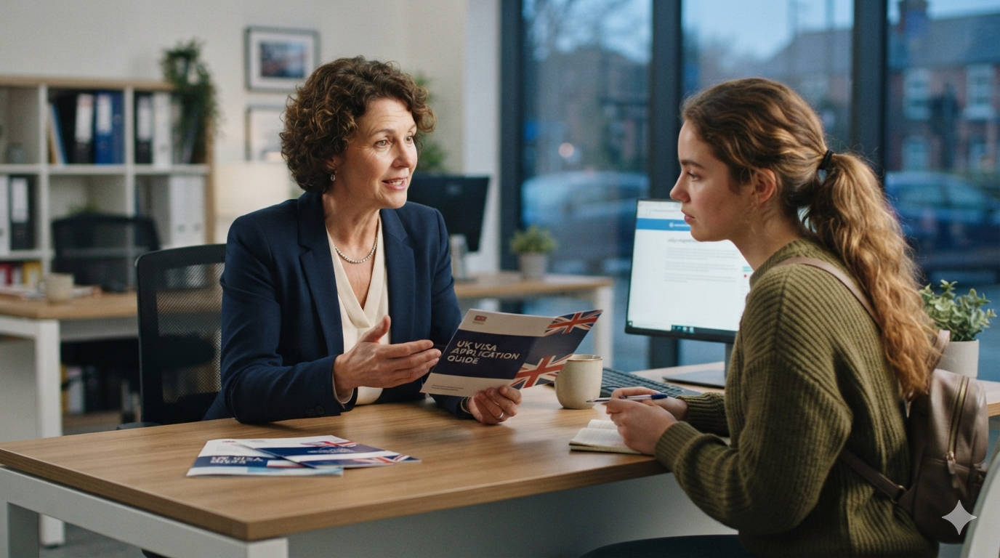

A clear, step-by-step guide to the Standard Visitor visa and Student visa process — covering costs, the CAS, financial evidence and the UKVI application steps.
Connect with us! We are happy to address your questions and concerns!
The UK Standard Visitor Visa is a versatile document that allows you to visit the UK for up to 6 months. It's designed for a variety of short-term purposes, ensuring you can experience everything the UK has to offer.
Holidays, sightseeing, and exploring the UK's rich heritage.
Visiting loved ones residing in the United Kingdom.
Attending meetings, conferences, or academic research.

The step-by-step path South African applicants follow to secure a UK Standard Visitor Visa.
Confirm you meet the basic requirements and determine the right visa sub-category.
Gather required evidence, including financial proof and travel history.
Complete the official UKVI online application form accurately.
Pay the application fee and any optional premium service charges securely.
Schedule a visit to your local Visa Application Centre (VAC).
Attend the VAC to submit your fingerprints, photograph, and passport.
Wait for the UKVI decision, tracking your application status online.
Receive your passport back, hopefully with your UK visa vignette inside.
Everything South African applicants need to gather and budget for before submitting a UK Visitor Visa application.
Bank statements showing sufficient funds to support yourself throughout your visit.
A clear itinerary, hotel bookings, or an invitation letter explaining your visit.
Evidence of ties to your home country (employment, property, family) ensuring your return.
Previous passports and visas demonstrating a history of compliant international travel.
£135
Standard application fee for a 6-month visitor visa. Prices may vary slightly by region.
3 Weeks
Average processing time after attending your biometric appointment at the visa centre.
The UK Student visa is for eligible students aged 16 or over who want to study on an eligible further or higher education course.
The typical process South African students follow to secure a UK Student visa.
Clear, transparent details to help South African students plan their transition smoothly.
Applicants may need to demonstrate sufficient funds for course fees shown on the CAS, living costs, and other required expenses depending on circumstances. Current GOV.UK guidance lists the following maintenance funds:
For up to 9 months
For up to 9 months
Specific exemptions and rules apply, so applicants should check the official GOV.UK guidance for their circumstances.
Current application fee from outside the UK. A healthcare surcharge is also generally payable and depends on the length of the visa.
GOV.UK currently states that applications made outside the UK usually receive a decision within 3 weeks, although individual cases can take longer.
Answers to what South African applicants ask us most about Standard Visitor and Student visas.
You apply online through the official UKVI system, then attend a Visa Application Centre for biometrics. The exact route depends on your purpose — visiting, studying, or another category — and we help you confirm the right one before you start your application.
The Standard Visitor visa is £135 for a 6-month visit. The Student visa is £558 from outside the UK, plus an immigration health surcharge that depends on the length of your course. These are official UKVI fees, separate from any preparation service you choose with us.
It depends on your route. Visitor applicants typically need a valid passport, proof of funds, and evidence of their travel purpose and ties to South Africa. Student applicants additionally need a valid CAS, academic evidence and funds to cover their course and living costs. We review your full document set before you submit.
A Confirmation of Acceptance for Studies (CAS) is a reference number your UK institution issues once they've confirmed your place on a course. You need a valid, unused CAS before you can submit your Student visa application, and the course fee shown on it determines part of your financial evidence requirement.
Yes, provided you can show the required relationship and that the funds have been held for the specified period in an acceptable account. We'll confirm the current GOV.UK rules for your situation and check your documents meet the format UKVI expects.
UKVI requires financial evidence to be dated within a specific window before you apply, and funds generally need to have been held for a minimum period beforehand. These rules can change, so we always check them against current GOV.UK guidance before you submit.
Read the refusal notice carefully — it will state the specific reason. We'll review it with you, address the gap in your evidence or explanation, and help you prepare a stronger reapplication rather than resubmitting the same documents.
We generally advise against booking non-refundable flights or accommodation until your visa is approved, since processing times can vary and there's no guarantee of a decision by a specific date.